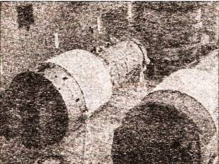
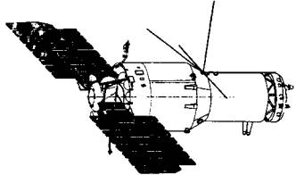
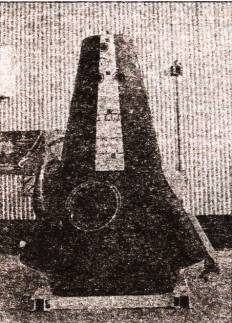
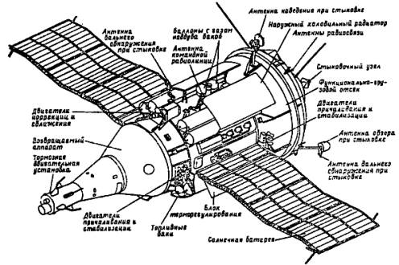

Советские военно-космические станции
Но прежде чем мы подробно поговорим об МКС, оглянемся назад и посмотрим, с чего началось сооружение орбитальных станций в СССР.
Еще лет десять тому назад этой главы в книге не могло быть в принципе — военная программа «Алмаз» была одной из самых секретных в советской космонавтике. Лишь в последние годы туман секретности постепенно стал таять, раскрывая довольно интересные подробности этой стороны деятельности советских конструкторов и космонавтов.
«ТЯЖЕЛАЯ АРТИЛЛЕРИЯ» КОРОЛЕВА. Создание долговременных орбитальных станций в Советском Союзе преследовало далеко идущую цель. Еще С. П. Королев отмечал в своих рабочих «Заметках по тяжелому межпланетному кораблю (ТМК) и тяжелой орбитальной станции (ТОС)», датированных 14 сентября 1962 года, что надо бы вокруг Земли создать некий «орбитальный пояс» из долговременных спутников для выполнения ряда функций в течение очень длительного времени. А чтобы эти спутники ремонтировать, регулировать, перезаряжать и т. д., нужна целая орбитальная служба.
Базироваться же эта служба должна была бы на крупном обитаемом спутнике или станции, где постоянно находился бы периодически сменяемый экипаж.
Заодно на членах этого экипажа можно было бы основательно проверить длительное влияние невесомости на достаточно большом числе людей, разные медико-биологические средства, механические средства временного и постоянного искусственного тяготения. Можно будет и впервые развернуть в космическом пространстве настоящие медико-биологические исследования в натуральных условиях. Тут же будет проверяться и техника, предназначенная для более длительных полетов.
Таким образом, основной задачей тяжелых орбитальных станций Королев считал подготовку к будущим межпланетным экспедициям и обслуживание искусственных спутников Земли. Однако Генеральный конструктор прекрасно понимал, в каком мире живет, поэтому предусмотрел и возможность военного применения таких станций.
В общем, чтобы запустить проект, в своем письме к министру обороны от 23 июня 1960 года Королев описал именно военную станцию. Ее масса — 25–30 т (в другой версии — даже вдвое больше!), экипаж от трех до пяти человек. Она могла бы выполнять множество задач, начиная от разведки территории потенциального противника, выявления мест размещения его военно-морских и военно-воздушных баз, ракет, постоянных мест дислокации войск и т. д. и кончая даже возможным применением боевого оружия против вражеских кораблей и баллистических ракет противника. Побочно экипаж мог бы также выполнять некоторые астрономические, метеорологические и геофизические наблюдения, изучение Солнца и радиационных поясов, ставить биологические эксперименты.
ПЕРВАЯ ПРИМЕРКА. Хитрость Королева имела успех. Военные «клюнули», и Королев получил предписание подготовить эскиз долговременной орбитальной станции оборонного назначения. Такой проект, известный ныне под грифом ТОС (тяжелая орбитальная станция), или ТКС (тяжелая космическая станция), был подготовлен конструкторами ОКБ-1 в мае 1961 года.
Станция с экипажем из трех человек должна была иметь следующие габариты: длина — 52 м, диаметр — 4,2 м, масса — 150 т. Энергетическая база — солнечные батареи и компактный ядерный реактор.
Станцию предполагалось составить из трех цилиндрических герметизированных модулей. В двух крайних из них — длиной по 20 м — размещались жилые и служебные помещения. Центральный 12-метровый модуль соединял два жилых отсека, имел два шлюза, четыре стыковочных узла в среднем отсеке. Дополнительные переборки внутри модулей позволяли герметизировать тот или иной объем станции в случае аварии.
Согласно плану, основной модуль станции должен был выводиться на орбиту одной из первых ракет Н1. Доставка жилых модулей требовала еще двух стартов тех же носителей. Ориентировочно начало монтажа назначили на 1965 год.
ПРОЕКТ МКБС. Однако этому проекту так и не суждено было реализоваться. И не только потому, что программа, связанная с ракетой Н1, потерпела крах. В ходе встречи главных конструкторов с Н. С. Хрущевым, состоявшейся 25 сентября 1962 года в Пицунде, было принято новое решение: на орбиту решили вывести пилотируемую орбитальную станцию вдвое меньшей массы, зато снабженную арсеналом ядерного оружия.
А когда к 1965 году макет такой станции был закончен, поступила новая команда, оказалось, что на орбиту надо выводить МКБС («Многоцелевую космическую базу-станцию»). Она должна была послужить своеобразным портом, в котором швартовались бы другие космические аппараты, главным образом разведчики, для сдачи своих фотоматериалов, перезарядки, заправки топливом, профилактики и ремонта.
Наличие такой базы значительно бы повысило ресурс военных спутников разведки, которые иначе в среднем работали 2–3 месяца, в лучшем случае — полгода.
В итоге станция снова «подросла»: длина ее увеличилась до 100 м, диаметр — до 6 м, масса — до 250 т. Основной экипаж должен был состоять из 6-10 космонавтов, которые бы сменялись через 2–3 месяца. Расчетное время эксплуатации МКБС — 10 лет.
Кроме всего прочего, станцию собирались оснастить различными видами противоракетного и противокосмического оружия, в том числе и лучевого.
СТАНЦИЯ «СОЮЗ». Тем временем, пока проект большой станции делался и переделывался, в космосе была осуществлена стыковка двух пилотируемых кораблей, «Союз-4» и «Союз-5». Так была образована первая временная космическая станция.
Правда, жизнь ее оказалась короткой — всего 4,5 часа. За это время космонавты Алексей Елисеев и Евгений Хрунов, надев скафандры, вышли в открытый космос, чтобы перейти из «Союза-5», на котором стартовали, в «Союз-4», в подчинение к Владимиру Шаталову.
Эта операция была успешно осуществлена 15 января 1969 года. А спустя два дня «Союз-4» уже с тремя космонавтами на борту возвратился на Землю. Оставшийся в одиночестве командир «Союза-5» Борис Волынов должен был последовать их примеру через сутки.
Однако при спуске приборный отсек, которому положено было отойти от спускаемого аппарата и сгореть в атмосфере, застрял. В итоге в плотные слои атмосферы вошел не только специально сконструированный для этого спускаемый аппарат, но еще и некие лишние части. Получилась многотонная, беспорядочно кувыркающаяся конструкция. Теплозащитный экран, обычно принимающий на себя удар атмосферы, в этой ситуации помочь не мог.
Казалось уж, спасения нет. Ни космонавт, ни наземный пункт управления никак не могли повлиять на ситуацию. Но на высоте 14 км приборный отсек все-таки отвалился. Кувыркание прекратилось, сработала парашютная система.
Но при этом стропы начало закручивать. Ситуация, до боли знакомая по случаю с В. М. Комаровым. И тут Волынову повезло еще раз. В какой-то момент кручение пошло в другую сторону. Парашют успел «схватить» воздух и притормозить падение.
И все же удар о нашу твердую планету оказался столь силен, что во рту Бориса Вольтова были сломаны многие зубы. Однако космонавт остался жив.
«АЛМАЗ» ДЛЯ ДИКТАТУРЫ ПРОЛЕТАРИАТА. Ну, а поскольку жертв не было, результаты, полученные в ходе полетов кораблей «Союз-4» и «Союз-5», были признаны удовлетворительными. Системы стыковки и жизнеобеспечения были проверены в деле. Стало быть, их можно использовать при монтаже и эксплуатации более крупной станции.
Впрочем, для вывода в космос тяжелых орбитальных станций типа МКБС требовался еще тяжелый носитель. А вот его-то и не было.
Ситуацией воспользовался извечный соперник и конкурент королевцев Владимир Челомей. Поняв, в чем причина заминки работ у Мишина, ставшего у руля вместо умершего Королева, Челомей предложил свой вариант орбитальной пилотируемой станции с экипажем из 2–3 человек и сроком существования не более двух лет. Ее преимущество состояло в том, что такая станция предназначалась для решения задач научного, народно-хозяйственного и оборонного значения, выводилась на орбиту одним махом — носителем УР500К («Протон-К»).
Станцию назвали «Алмаз», и в 1967 году проект был принят к разработке Межведомственной комиссией, состоявшей из представителей науки, промышленности и Министерства обороны.
Через год был готов уже макет комплекса «Алмаз», и на заводе № 22 (ныне — завод имени Хруничева) началось изготовление корпуса станции. Кроме него, в разработке находились возвращаемый аппарат и большегрузный транспортный корабль снабжения ТКС.
Предполагалось, что «Алмаз» станет более совершенным космическим разведчиком, чем «Зениты» — автоматические беспилотные аппараты, которые большую часть запаса пленки расходовали впустую. Космонавты могли сначала разглядывать тот или иной объект в видимом или инфракрасном спектре через мощный оптический телескоп, а потом уж начинать его фотографирование.
Экспонированная пленка оперативно проявлялась тут же на борту под контролем экипажа. И уже достойные внимания военной разведки снимки передавались на Землю по телевизионному каналу.
Поскольку поверхность Земли довольно часто бывает скрыта облаками, создатели «Алмаза» возлагали большие надежды на радиолокатор бокового обзора, способный эффективно работать в любых метеоусловиях.
Учитывая, что в период проектирования станции «Алмаз» в США велись работы над различного рода космическими перехватчиками, были приняты меры для защиты от вражеских истребителей. Капсула с наиболее интересными материалами могла быть оперативно сброшена на Землю через специальный люк, а для защиты от противника на борту имелась специальная скорострельная пушка.
ТРАНСПОРТНЫЙ КОРАБЛЬ СНАБЖЕНИЯ ТКС. Работы по ракетно-космической системе «Алмаз» шли полным ходом и распределялись следующим образом. Проект в целом контролировала головная организация Челомея — Центральное конструкторское бюро «Машиностроение» (ЦКБМ). А вот создание транспортного корабля снабжения ТКС и ракеты-носителя УР500К поручили филиалу № 1 ЦКБМ. Станция, корабль и носитель должны были изготавливаться на машиностроительном заводе имени Хруничева.
Кроме самой станции, наиболее конструктивно интересен, пожалуй, ТКС. В отличие от космического корабля «Союз», где спускаемый аппарат располагался под бытовым отсеком, возвращаемый аппарат ТКС занимал верхнее положение, чем обеспечивалось его лучшая сохранность в аварийной ситуации. Правда, такая компоновка потребовала наличия люка в самом уязвимом месте конструкции — днище возвращаемого аппарата, где располагался тепловой экран. Однако натурные испытания возвращаемого аппарата подтвердили надежность конструкции.
Стыковочный агрегат ТКС имел конструкцию, заметно отличающуюся от узла стыковки «Союза». Он располагался на заднем торце грузового блока. Космонавты в скафандрах при сближении со станцией должны были располагаться непосредственно у стыковочного агрегата и видели все через иллюминаторы. Это заметно упрощало процедуру стыковки.
Габариты корабля ТКС получились вполне приличными: длина — 17,5 м, диаметр — 4,2 м, масса — 17,5 т, экипаж — 3 человека. Продолжительность автономного полета — 7 суток, время эксплуатации в составе комплекса «Алмаз» — до 200 дней.
ДВА «САЛЮТА» С РАЗНЫМИ «ЛИЦАМИ». Разработка и внедрение по заказу Министерства обороны СССР ракетно-космической системы «Алмаз» были возложены на Госкомитет по авиационной технике, который в то время возглавлял П. Дементьев. К началу 1970 года изготовили две летных и восемь стендовых станций, однако с оснащением их оборудования вышла задержка.
Дело в том, что Мишин и его команда смогли доказать: их вариант станции, получивший название ДОС (долговременная орбитальная станция), может быть дешевле и построен быстрее за счет использования уже готовых систем с пилотируемого корабля «Союз». Действительно, новая орбитальная станция, получившая название «Салют» (17К). была готова к запуску всего через год.
Тем не менее 16 июня 1970 года вышло закрытое постановление ЦК КПСС и Совета Министров СССР о продолжении работ по созданию комплекса «Алмаз». Во второй половине 1972 года были сформированы и первые экипажи для летных испытаний станции. Командирами и бортинженерами назначали только военных из специального отряда космонавтов ВВС.
К началу следующего года наземные испытания станции завершились, и 3 апреля 1973 года она была выведена на орбиту. Причем для большей маскировки станции типа «Алмаз» было решено называть либо «Салютами», либо вообще тяжелыми спутниками серии «Космос».
Поэтому создалась несколько замысловатая ситуация: две команды создавали разные станции, а называли их одинаково.
Однако вернемся к судьбе первого «Алмаза». На 13-е сутки полета почему-то произошла разгерметизация его отсеков, затем с борта прекратила поступать телеметрическая информация. Анализ полученных данных позволил определить наиболее вероятную причину аварии: неисправность двигательной установки, которая привела к прожогу герметичного корпуса. Эксплуатировать станцию в пилотируемом режиме оказалось невозможным, и ее утопили в океане.
ПЕРВЫЙ УСПЕХ. Следующая станция, доставленная на орбиту 25 июня 1974 года, была названа «Салют-3». Она имела конструкцию, аналогичную предыдущей станции, но иную судьбу. После всесторонних проверок в автоматическом режиме 4 июля на ее борт «Союзом-14» был доставлен первый экипаж: командир полковник Павел Попович и бортинженер подполковник-инженер Юрий Артюхин.
За 15 суток работы на борту «Алмаза» они выполнили программу наладки оборудования — проверили системы, отрегулировали температуру воздуха, переместили вентиляторы, провели другие работы. По возвращении на Землю космонавты не высказали никаких серьезных замечаний в адрес создателей станции. Она могла начать функционирование в рабочем режиме.
Второй экипаж — подполковник Геннадий Сарафанов и полковник-инженер Лев Демин — должен был прибыть на станцию 27 августа 1974 года на «Союзе-15». Однако из-за неисправности в системе сближения и стыковки «Игла» космонавты состыковаться так и не смогли.
На доработку «Иглы» ушло много времени, потому «Салют-3» в пилотируемом режиме больше не эксплуатировался. Почти через месяц, 23 сентября, возвращаемая капсула доставила на Землю фотопленки и другие материалы, а сама станция по команде из ЦУПа была спущена с орбиты 24 января 1975 года и сгорела в плотных слоях атмосферы.
ИСПЫТАНИЯ ПРОДОЛЖАЮТСЯ. Через полтора года, а именно — 21 июня 1976 года на орбиту был выведен «Алмаз-3» под маской «Салюта-5».
Полковник Борис Волынов и подполковник-инженер Виталий Жолобов стартовали к нему на «Союзе-21» 6 июля того же года. Однако, несмотря на доработки, «Игла» вновь дала сбой на последнем этапе, и стыковку пришлось провести вручную.
Космонавты должны были наблюдать за стартами баллистических ракет, перемещениями атомных подлодок и авианосцев США. Для командира экипажа Волынова это был уже второй полет, бортинженер Жолобов отправился в космос впервые. Тем не менее через несколько дней после прибытия на станцию подчиненный начал, что называется, «качать права» и саботировать команды командира. Ежедневные перепалки между двумя военными стали занимать все больше времени. Когда же дело едва не дошло до рукопашной, руководители полета дали команду на спуск.
Большов и Жолобов вернулись на Землю, проработав на орбите лишь полтора месяца вместо трех. Скандал замяли, космонавты, как было и положено в то время, получили по звезде Героя Советского Союза. Но в космос больше ни одного из них не посылали.
В октябре 1976 года к «Алмазу-3» был отправлен очередной военный экипаж — полковник Вячеслав Зудов и капитан 1-го ранга Валерий Рождественский. Но попасть на станцию им так и не удалось — неоднократные попытки состыковаться с ней так и не увенчались успехом. Через сутки полета ЦУП выдал команду на посадку.
Однако на Земле космонавтов ждали новые испытания. Корабль из-за плохой погоды не приземлился в казахстанской степи, как обычно, а был снесен ветром в степное озеро Тенгиз. Причем из-за нарушенной центровки спускаемый аппарат перевернулся вверх дном. Шел сильный снег, и спасатели смогли добраться до находившегося в километре от берега аппарата только многие часы спустя. А космонавты все это время провели в спускаемом аппарате вниз головой.
Программу пришлось выполнять дублерам: полковнику Виктору Горбатко и подполковнику-инженеру Юрию Глазкову. Они стартовали 7 февраля 1977 года на «Союзе-24» и через сутки перешли на станцию. Космонавты убедились, что «Алмаз» можно эксплуатировать в пилотируемом режиме, но больших подвигов совершить не смогли.
И спустя две недели, 25 февраля, экипаж возвратился на Землю. Днем позже от станции отделилась и успешно приземлилась возвращаемая капсула.
Далее «Салют-5» продолжал работать в автоматическом режиме, и полет его прекратили 8 августа, после того как станция пробыла на орбите 412 суток. Так завершился первый этап летно-конструкторских испытаний.
ИСПЫТАНИЯ ВОЗВРАЩАЕМОГО АППАРАТА. Одновременно проводились автономные летно-конструкторские испытания возвращаемого аппарата (ВА). Два ВА одной ракетой-носителем «Протон» выводили на орбиту, а затем они «поодиночке» совершали автоматический спуск и посадку. Предусматривалось многократно использовать каждый ВА.
Первую пару — «Космос-882» и «Космос-883» — запустили 15 декабря 1976 года. Оба возвращаемых аппарата в тот же день и успешно приземлились. Затем были еще два удачных старта: 30 марта 1978 года — «Космос-997» и «Космос-998» и 22 мая 1979 года — «Космос-1100» и «Космос-1101». Однако в течение этого времени произошло две аварии ракет-носителей, и на пилотируемый полет пойти не рискнули.
Для ТКС также были предусмотрены летно-конструкторские испытания. Первый из кораблей — «Космос-929» — вывели на орбиту 17 июля 1977 года. Через месяц от него отделился и благополучно приземлился возвращаемый аппарат. Сам же корабль находился в автономном полете 201 сутки.
По результатам испытаний ТКС пришлось длительно дорабатывать. И потому второй полет, вновь в беспилотном варианте и под вывеской «Космос-1267», начался только 25 апреля 1981 года. Опять-таки через месяц возвращаемый аппарат совершил посадку в заданном районе. А сам ТКС пристыковался 19 июня к «Салюту-6» и вместе с ним прошел ресурсные испытания. По команде с Земли весь комплекс сошел с орбиты лишь 29 июля 1982 года.

Станция «Алмаз» с двумя стыковочными узлами (слева) и беспилотный вариант (справа) в сборочном цехе.

Так должна была выглядеть пилотируемая станция «Алмаз» в полете.
Несмотря на достигнутые успехи, 19 декабря 1981 года вышло постановление ЦК КПСС и СМ СССР о прекращении работ по «Алмазу». Уже изготовленные космические аппараты законсервировали на заводе. НПО машиностроения переориентировали на создание автоматических станций, а КБ «Салют» — на разработку модулей для орбитальной станции «Мир».
Решено было лишь довести до конца испытания ТКС совместно со станцией «Салют-7». Поэтому 2 марта 1983 года корабль снабжения под названием «Космос-1443» стартовал в беспилотном варианте. Через восемь суток он состыковался со станцией, доставив 2700 кг грузов и 4 т топлива.
Затем к этой «связке» на «Союзе Т-8» полетели Владимир Титов, Геннадий Стрекалов, Александр Серебров. Но их стыковка не удалась из-за неисправности антенны системы «Игла».

Так выглядит возвращаемый аппарат.
Расконсервировал ТКС и работал на нем следующий экипаж — Владимир Ляхов и Александр Александров. 14 августа корабль отстыковали от «Салюта-7». На следующий день от него отделился возвращаемый аппарат, унесший 350 кг груза. Сам же транспортный корабль затопили в океане.
Последний из транспортных кораблей превратили в корабль для доставки грузов на «Салют-7». Он мог также с помощью своей двигательной установки увеличить высоту орбиты комплекса.
Все уже было готово к его запуску, но старт пришлось отложить — на станции отказала система энергопитания, и связь с ней была потеряна. Ситуацию пришлось исправлять бригаде ремонтников в составе Владимира Джанибекова и Виктора Савиных. Затем на станцию прилетел основной экипаж — Владимир Васютин, Георгий Гречко и Александр Волков. После недельного совместного полета Джанибеков и Гречко возвратились на Землю, а оставшиеся приготовились встречать транспортный корабль снабжения. Выйдя на орбиту 27 сентября 1985 года, ТКС («Космос-1686») 2 октября состыковался с «Салютом-7».
Однако выполнить все намеченные работы космонавтам не удалось: тяжело заболел Васютин, и полет прекратили досрочно.
Тогда решили провести хотя бы испытания комплекса на ресурс в беспилотном варианте. Однако для этого орбиту станции пришлось поднять до 450 км, включив двигательную установку транспортного корабля. В итоге топливо на ТКС было выработано практически полностью, и он остался пристыкованным к станции.
Планировали через несколько лет спустить весь комплекс на Землю в грузовом трюме «Бурана». Но старт космического корабля все откладывался. Между тем станция опускалась все ниже.
В итоге момент для цивилизованного спуска был упущен. И станция, оставшаяся без топлива, стала падать в неконтролируемом режиме. И 7 февраля 1991 года она грохнулась в пустынном районе, на границе между Чили и Аргентиной. Реального вреда обломки комплекса, к счастью, никому не причинили, но извиняться и оплачивать убытки «за нанесенный урон окружающей среде» все же пришлось.
ВОЗРОЖДЕНИЕ ПРОГРАММЫ. Казалось бы, после такого фиаско про программу можно начисто забыть — явно вреда от нее больше, чем пользы. Однако Генеральному конструктору НПО машиностроения Г. Ефремову в 1985 году удалось-таки добиться продолжения работ по созданию теперь уже автоматических спутников дистанционного зондирования Земли «Алмаз-Т». Причем не будем наивными, как ни называй данное устройство — станцией или спутником, — в основе ее лежит все тот же комплекс военно-разведывательной аппаратуры.
Так или иначе, во второй половине 1986 года автоматический разведчик «Алмаз-??» прошел предстартовые испытания на Байконуре, но… на орбиту не вышел, так как ракета-носитель «Протон» взорвалась при запуске.

Транспортный корабль снабжения ТКС проходил по официальной «легенде» под именем «Космос-1443».
Второй «Алмаз-Т», получивший для пущей секретности кодовое обозначение «Космос-1870», был выведен на орбиту 25 июля 1987 года. Размещенное на спутнике радиолокационное оборудование позволило получать изображения земной поверхности днем и ночью, при любой облачности с разрешением от 25 м в течение двух лет.
Однако что такое разрешение в 25 м? На практике оно означает, что объектов размерами меньше этой величины спутник уже не видит. То есть, говоря иначе, грузовик он, может быть, еще заметит, а вот легковую машину никак… Но где же тогда та аппаратура, про которую писали, что с орбиты можно увидеть звезды на погонах военного, причем понять, старший лейтенант это или полковник?…
В общем, 31 марта 1991 года последний «Алмаз-Т» запустили под своим подлинным именем, поставив на него более совершенную радиолокационную систему с радиолокатором бокового обзора с разрешением 15 м. Полученная информация наконец-таки была использована, хотя и не в полном объеме, различными ведомствами и организациями.
БОЕВЫЕ КОМПЛЕКСЫ ДЛЯ «БУРАНА». Казалось бы, полученный эффект полного «пшика» очевиден. И надо бы подумать о более эффективном использовании народных денег. Министерство обороны подумало. И… заказало ракетно-космический комплекс «Энергия-Буран».
Говорят, само по себе это решение родилось при довольно странных обстоятельствах. Сначала министр обороны и его подчиненные довольно долго сопротивлялись, говорили, что космический самолет им совершенно не нужен. Программа дорогая и малоэффективная, что видно на примере американских «Шаттлов»…
Однако эта точка на одном из заседаний Политбюро ЦК КПСС поменялась коренным образом, когда вдруг выяснилось, что, ежели вдруг «Шаттл» спикирует на Кремль и во время этого пикирования сбросит бомбу, перехватить его совершенно нечем.
Тут же в срочном порядке В. М. Глушко и его команде была заказана аналогичная машина. Зачем? Четкого ответа на этот вопрос лично я ни от кого добиться не смог Потому предлагаю собственную версию. Видимо, наши военные собирались противодействовать маневрам «Шаттла» в космосе примерно так же, как они делали это в океане. Стоило выйти в море, скажем, американскому авианосцу с боевым охранением, как к нему тут же присоединялся «почетный конвой» из наших кораблей, отслеживавший каждый маневр потенциального противника. Американцы поступали также.
Ну, а раз была принято решение о создании орбитального корабля «Буран», то для него на основании специального секретного постановления ЦК КПСС и Совета Министров СССР «Об исследовании возможности создания оружия для ведения боевых действий в космосе и из космоса» (1976 год) была тут же принята и программа создания боевых нагрузок и вооружений.
Денег и на это было затрачено немерено. В НПО «Энергия» был проведен обширный комплекс исследований по определению возможных путей создания космических средств, способных решать задачи поражения космических аппаратов военного назначения, баллистических ракет в полете, а также особо важных воздушных, морских и наземных целей.
Причем для большей надежности поражения военных космических объектов было разработано два вида боевых космических аппаратов на единой конструктивной основе, но оснащенных различными типами бортовых комплексов вооружения — лазерным и ракетным. Причем основой обоих аппаратов явился унифицированный служебный блок, созданный на базе конструкции служебных систем и агрегатов орбитальной станции серии ДОС, или «Салют». На злополучный «Алмаз», видимо, уж никто не надеялся.
В итоге получилась весьма громоздкая и дорогая конструкция. Мне однажды довелось видеть ее на старте. Представьте себе, что вы видите готовую взлететь колокольню Ивана Великого в Московском Кремле вместе с расположенным рядом собором. Ощущение будет сходное…
На практике вся эта система использовалась всего пару раз. Сначала в космос был выведен некий имитатор полезной нагрузки (во всяком случае, так было объявлено в открытой печати; чем же был «имитатор» на самом деле — чуть ниже). Затем та же ракета «Энергия» вывезла в один-единственный полет самолет «Буран» в беспилотном варианте.
После этого стала уж совсем очевидна практическая несостоятельность этой громоздкой махины в случае военных действий. Раздолбать ее еще на дороге к старту или при подготовке к пуску — для ракетчиков пара пустяков… И дорогие игрушки стали распродавать. Один из «Буранов» купил американский Музей астронавтики и космической техники, другой, помнится, продали в Австралию в качестве аттракциона; третий в аналогичном качестве стоит в Москве, в Центральном парке отдыха трудящихся.
Лично мне во всей этой истории больше всего жаль летчиков-космонавтов во главе с Игорем Волком, которые были задействованы в этой программе. Невезучая была какая-то группа. Из шести человек в живых, по моим подсчетам остались лишь двое. Кто-то погиб на тренировке, кто-то — от болезни. Но и эти двое, пройдя полный курс подготовки и даже слетав в космос для тренировки в составе других экспедиций, в своем основном качестве востребованы так и не были…
ДЛЯ ЧЕГО НУЖЕН «СКИФ-ДМ». Остановимся на судьбе лазерной станции «Скиф», предназначенной для поражения низкоорбитальных космических объектов бортовым лазерным комплексом. Сначала его разрабатывали в НПО «Энергия», но в связи с большой загруженностью объединения работами по программе «Энергия-Буран» с 1981 года тему «Скиф» передали в КБ «Салют».
В это время в Кремле произошла очередная перестановка руководителей, и новый Генеральный секретарь ЦК КПСС Юрий Андропов, будучи человеком умным и практичным, 18 августа 1983 года сделал заявление о том, что СССР в одностороннем порядке прекращает испытания комплекса противокосмической обороны. Но Андропова вскоре не стало; очередной же хозяин американского Белого дома Рональд Рейган затеял программу СОИ, поэтому волей-неволей работы над «Скифом» пришлось продолжить.
Станция «Скиф-ДМ» («Полюс») имела длину 37 м, диаметр — 4,1 м и массу около 80 т. Состояла эта махина из двух основных отсеков: функционально-служебного блока и целевого модуля.
Функционально-служебный блок представлял собой давно освоенный космический корабль снабжения орбитальной станции «Салют». Здесь размещались системы управления движением и бортовым комплексом, телеметрического контроля, командной радиосвязи, обеспечения теплового режима, энергопитания и т. д. Далее пристроили четыре маршевых двигателя, 20 двигателей ориентации и стабилизации и 16 двигателей точной стабилизации, а также баки, трубопроводы и клапаны пневмогидросистемы, обслуживающей двигатели, и солнечные батареи.
Целевой модуль спроектировали и изготовили заново. Именно в нем, судя по всему, и должно было располагаться то оружие, которым станция могла поражать объекты противника. Характеристики этого оружия и по сей день являются секретными. Во всяком случае, в открытой печати мне не удалось найти его более-менее конкретного описания.
Впрочем, оно так и не понадобилось.
Первоначально старт системы «Энергия-Скиф-ДМ» планировался на сентябрь 1986 года. Однако из-за задержки изготовления аппарата, подготовки пусковой установки и по другим причинам запуск отложили до 15 мая 1987 года. Программа полета орбитальной станции «Скиф-ДМ» включала в себя десять экспериментов: четыре прикладных и шесть геофизических. В частности, планировалось провести исследования возможности формирования этаких «миражей» — ложных целей в верхних слоях атмосферы, а также эксперименты по генерации искусственных внутренних гравитационных волн верхней атмосферы и созданию искусственного «динамоэффекта» в ионосфере. Наконец, в той же ионо- и плазмосфере планировалось создать несколько искусственных «дыр» с помощью газовой смеси ксенона с криптоном, распыляемой на высоте более 110 км.
Однако программа испытаний аппарата «Скиф-ДМ» так и не была реализована. Станция «Полюс» (официальное открытое название «Скиф-ДМ») на орбиту не вышла и упала в океан. Правда, ТАСС нашло для этого более обтекаемые формулировки: дескать, макет блока «приводнился в акватории Тихого океана», но сути дела это не меняет. Тем все и кончилось.